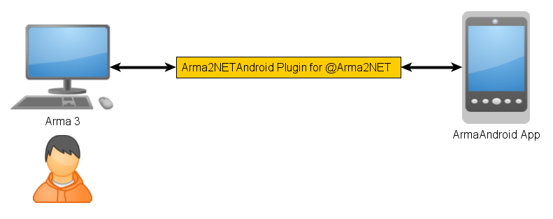

Links:
This is a clientside plugin that connects Arma to your Android phone/tablet. It uses the Arma2NET wrapper system. It is written in C#.
Put the plugin in the appropriate folder for @Arma2NET. The folder structure for Arma2NET should look like the following. Note that if you downloaded a compiled version of the plugin, this should already be included and already setup correctly.
This is just an example location for Arma 3, you'll have to figure out where your Arma game folder is.
C:\Program Files\Steam\SteamApps\common\Arma 3\@Arma2NET\
C:\Program Files\Steam\SteamApps\common\Arma 3\@Arma2NET\Addins\
C:\Program Files\Steam\SteamApps\common\Arma 3\@Arma2NET\AddIns\Arma2NETAndroidPlugin\
C:\Program Files\Steam\SteamApps\common\Arma 3\@Arma2NET\AddIns\Arma2NETAndroidPlugin\Arma2NETAndroidPlugin.dll
None at this time.
Make sure all software firewalls (Windows firewall, antivirus firewall, etc...) allow UDP port 65041 and TCP port 65042. Most programs should prompt you at the beginning when it tries to make a connection. All network connections should be on the same subnet and will not leave your local network.
If you found a bug, please create an issue ticket on Github.
There will be a thread on the BIS forums at some point in the future once it gets closer to release. The forums are preferred over emailing me because then the question/answer is available to future people who have similar problems. If you post any questions anywhere, please post the log files as well.
Logs files can be found here so if you're troubleshooting stuff, check there first.
C:\Users\Username\AppData\Local\Arma2NETAndroid\logs
The overview of events for networking is the following:
Arma2NETMySQL is licensed under the GPL version 3. If you would like to contribute code or fixes, please fork the project on Github and submit a pull request.